We’ll read in the data in two ways:
• First, modify the code provided with the download to read in the data from a local file source (your downloaded .csv files) and combine the two data frames. Use local paths as they do in their code.
# Using functions from Base R# load the two tables from local filesmat <-read.table("student+performance/student/student-mat.csv", sep=";", header=TRUE)por <-read.table("student+performance/student/student-por.csv", sep=";", header=TRUE)# join them using the supplied code (an outer join on several fields)dat_via_merge <-merge(x=mat, y=por, by=c("school","sex","age","address","famsize","Pstatus","Medu","Fedu","Mjob","Fjob","reason","nursery","internet"))# show the table and clean uphead(dat_via_merge)
school sex age address famsize Pstatus Medu Fedu Mjob Fjob reason
1 GP F 15 R GT3 T 1 1 at_home other home
2 GP F 15 R GT3 T 1 1 other other reputation
3 GP F 15 R GT3 T 2 2 at_home other reputation
4 GP F 15 R GT3 T 2 4 services health course
5 GP F 15 R GT3 T 3 3 services services reputation
6 GP F 15 R GT3 T 3 4 services health course
nursery internet guardian.x traveltime.x studytime.x failures.x schoolsup.x
1 yes yes mother 2 4 1 yes
2 no yes mother 1 2 2 yes
3 yes no mother 1 1 0 yes
4 yes yes mother 1 3 0 yes
5 yes yes other 2 3 2 no
6 yes yes mother 1 3 0 yes
famsup.x paid.x activities.x higher.x romantic.x famrel.x freetime.x goout.x
1 yes yes yes yes no 3 1 2
2 yes no no yes yes 3 3 4
3 yes yes yes yes no 4 3 1
4 yes yes yes yes no 4 3 2
5 yes yes yes yes yes 4 2 1
6 yes yes yes yes no 4 3 2
Dalc.x Walc.x health.x absences.x G1.x G2.x G3.x guardian.y traveltime.y
1 1 1 1 2 7 10 10 mother 2
2 2 4 5 2 8 6 5 mother 1
3 1 1 2 8 14 13 13 mother 1
4 1 1 5 2 10 9 8 mother 1
5 2 3 3 8 10 10 10 other 2
6 1 1 5 2 12 12 11 mother 1
studytime.y failures.y schoolsup.y famsup.y paid.y activities.y higher.y
1 4 0 yes yes yes yes yes
2 2 0 yes yes no no yes
3 1 0 yes yes no yes yes
4 3 0 yes yes no yes yes
5 3 0 no yes yes yes yes
6 3 0 yes yes no yes yes
romantic.y famrel.y freetime.y goout.y Dalc.y Walc.y health.y absences.y G1.y
1 no 3 1 2 1 1 1 4 13
2 yes 3 3 4 2 4 5 2 13
3 no 4 3 1 1 1 2 8 14
4 no 4 3 2 1 1 5 2 10
5 yes 4 2 1 2 3 3 2 13
6 no 4 3 2 1 1 5 2 11
G2.y G3.y
1 13 13
2 11 11
3 13 12
4 11 10
5 13 13
6 12 12
• Second, read in and combine the data using functions from the tidyverse. Use an inner_join() on the variables they used in their code. Do you notice any issues? Make a note of the issue.
• Use an inner_join() on all variables other than G1, G2, G3, paid, and absences. Use this form of the combined data in further exercises.
# Using functions from tidyvselibrary(tidyverse)
Warning: package 'ggplot2' was built under R version 4.2.3
Warning: package 'tidyr' was built under R version 4.2.3
Warning: package 'readr' was built under R version 4.2.3
Warning: package 'dplyr' was built under R version 4.2.3
── Attaching core tidyverse packages ──────────────────────── tidyverse 2.0.0 ──
✔ dplyr 1.1.4 ✔ readr 2.1.5
✔ forcats 1.0.0 ✔ stringr 1.5.0
✔ ggplot2 3.5.1 ✔ tibble 3.2.1
✔ lubridate 1.9.3 ✔ tidyr 1.3.1
✔ purrr 1.0.1
── Conflicts ────────────────────────────────────────── tidyverse_conflicts() ──
✖ dplyr::filter() masks stats::filter()
✖ dplyr::lag() masks stats::lag()
ℹ Use the conflicted package (<http://conflicted.r-lib.org/>) to force all conflicts to become errors
# load the two tables from local filesstudent_mat <-read_delim("student+performance/student/student-mat.csv",delim =";")
Rows: 395 Columns: 33
── Column specification ────────────────────────────────────────────────────────
Delimiter: ";"
chr (17): school, sex, address, famsize, Pstatus, Mjob, Fjob, reason, guardi...
dbl (16): age, Medu, Fedu, traveltime, studytime, failures, famrel, freetime...
ℹ Use `spec()` to retrieve the full column specification for this data.
ℹ Specify the column types or set `show_col_types = FALSE` to quiet this message.
Rows: 649 Columns: 33
── Column specification ────────────────────────────────────────────────────────
Delimiter: ";"
chr (17): school, sex, address, famsize, Pstatus, Mjob, Fjob, reason, guardi...
dbl (16): age, Medu, Fedu, traveltime, studytime, failures, famrel, freetime...
ℹ Use `spec()` to retrieve the full column specification for this data.
ℹ Specify the column types or set `show_col_types = FALSE` to quiet this message.
# create the list of joining variables as the complement of those specified to avoidinner_join_vars <-colnames(student_mat)[!colnames(student_mat) %in%c("G1","G2","G3","absences","paid")]# join them as an inner joindat <-inner_join(x = student_mat, y=student_por, by=inner_join_vars, suffix=c("_mat","_por"))# show the tibbledat
# A tibble: 320 × 38
school sex age address famsize Pstatus Medu Fedu Mjob Fjob reason
<chr> <chr> <dbl> <chr> <chr> <chr> <dbl> <dbl> <chr> <chr> <chr>
1 GP F 18 U GT3 A 4 4 at_home teach… course
2 GP F 17 U GT3 T 1 1 at_home other course
3 GP F 15 U GT3 T 4 2 health servi… home
4 GP F 16 U GT3 T 3 3 other other home
5 GP M 16 U LE3 T 4 3 services other reput…
6 GP M 16 U LE3 T 2 2 other other home
7 GP F 17 U GT3 A 4 4 other teach… home
8 GP M 15 U LE3 A 3 2 services other home
9 GP M 15 U GT3 T 3 4 other other home
10 GP F 15 U GT3 T 4 4 teacher health reput…
# ℹ 310 more rows
# ℹ 27 more variables: guardian <chr>, traveltime <dbl>, studytime <dbl>,
# failures <dbl>, schoolsup <chr>, famsup <chr>, paid_mat <chr>,
# activities <chr>, nursery <chr>, higher <chr>, internet <chr>,
# romantic <chr>, famrel <dbl>, freetime <dbl>, goout <dbl>, Dalc <dbl>,
# Walc <dbl>, health <dbl>, absences_mat <dbl>, G1_mat <dbl>, G2_mat <dbl>,
# G3_mat <dbl>, paid_por <chr>, absences_por <dbl>, G1_por <dbl>, …
• Next, for the math data, Portuguese, and combined data, choose four categorical variables you are interested in and convert those into factor variables in each tibble (use the same four variables in each). Use the mutate() function to accomplish this.
# use mutate() to convert to factordat <-mutate(dat, across(c(address, reason, internet, higher), as.factor))mat <-mutate(mat, across(c(address, reason, internet, higher), as.factor))por <-mutate(por, across(c(address, reason, internet, higher), as.factor))
Task 2: Summarize the Data (Very Basic EDA)
Categorical variables
• Create a one-way contingency table, a two-way contingency table, and a three-way contingency table for some of the factor variables you created previously. Use table() to accomplish this.
– Interpret a number from each resulting table (that is, pick out a value produced and explain what that value means.)
# 1-way contingency tabletable("internet at home?"= dat$internet)
internet at home?
no yes
48 272
The 1-way contingency table shows that the majority of students have internet access available at home.
# 2-way contingency tabletable("internet at home?"= dat$internet, "address"= dat$address)
address
internet at home? R U
no 21 27
yes 46 226
The 2-way contingency table shows that urban students are more likely to have internet access at home versus rural students. Also note that rural students make up a small minority of the total students in these data.
, , want higher ed? = no
address
internet at home? R U
no 0 0
yes 3 4
, , want higher ed? = yes
address
internet at home? R U
no 21 27
yes 43 222
The 3-way contingency table shows that the vast majority of students here do want to pursue higher education. Of the 6 students who do not, all do have internet access at home.
• Create a conditional two-way table using table(). That is, condition on one variable’s setting and create a two-way table. Do this using two different methods:
– Once, by subsetting the data (say with filter()) and then creating the two-way table.
#Subsetdown to only students who mention the school’s reputation as the reason for taking the class. # 2-way contingency table, pre-filtered for conditionfil <-filter(dat, reason =="reputation")table("internet at home?"= fil$internet,"address"= fil$address)
address
internet at home? R U
no 3 9
yes 18 55
Within this subset, we see that all the rural students have internet access at home versus 8 of 21 urbanstudents.
– Once, by creating a three-way table and subsetting it
# 3-way contingency table, conditioned by 1 dimensiontab <-table( "internet at home?"= dat$internet,"address"= dat$address,"why this school?"= dat$reason)tab[,,"reputation"]
address
internet at home? R U
no 3 9
yes 18 55
• Create a two-way contingency table using group_by() and summarize() from dplyr. Then use pivot_wider() to make the result look more like the output from table().
# The above examples used the base R table() function, but we can create similar contingency tablesusing functions from dplyr (the tidyverse). In the table below, we see that rural students are much less likely to use “closeness to home” as the reason for taking the class versus urban students.# 2-way contingency table using dplyrdat |>group_by(reason, address) |>summarize(count =n()) |>pivot_wider(names_from = address, values_from = count)
`summarise()` has grouped output by 'reason'. You can override using the
`.groups` argument.
# A tibble: 4 × 3
# Groups: reason [4]
reason R U
<fct> <int> <int>
1 course 28 90
2 home 9 78
3 other 9 21
4 reputation 21 64
• Create a stacked bar graph and a side-by-side bar graph. Give relevant x and y labels, and a title for the plots.
# data counts for plotdat_barplot <- dat |>group_by(reason, address) |>summarize(count =n())
`summarise()` has grouped output by 'reason'. You can override using the
`.groups` argument.
# stacked barplotggplot(data=dat_barplot, aes(x=reason, y=count, fill=address)) +geom_bar(stat="identity") +xlab("Reason for choosing school") +ylab("Student Count") +ggtitle("Reason for choosing school by Address Type") +scale_fill_discrete(name="Address", labels=c("Rural","Urban"))
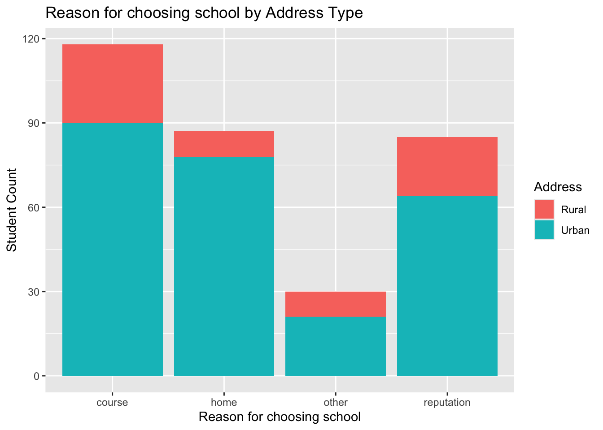
# side-by-side barplotggplot(data=dat_barplot, aes(x=reason, y=count, fill=address)) +geom_bar(stat="identity", position="dodge") +xlab("Reason for choosing school") +ylab("Student Count") +ggtitle("Reason for choosing school by Address Type") +scale_fill_discrete(name="Address", labels=c("Rural","Urban"))
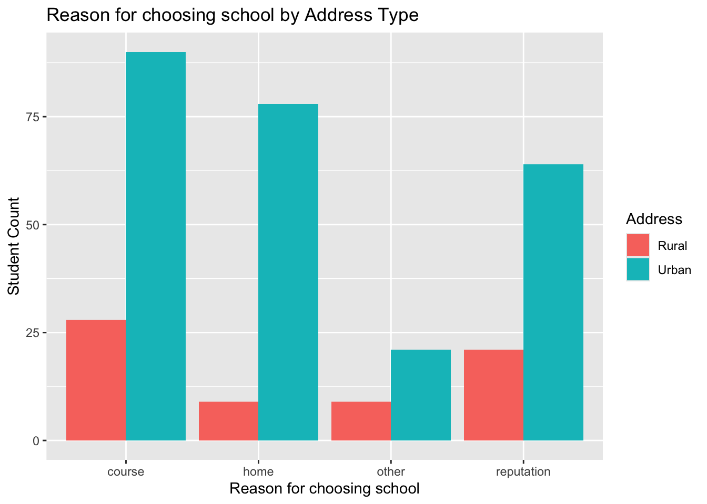
Numeric variables
The numeric variables are age, absences, and the three test grades variables (G1, G2, and G3) from each data set (math and Portuguese).
• Find measures of center and spread for three of these variables (including at least one G3 variable)
The results show that the mean Portuguese term grades increase slightly over time, the standard deviations of the Math term scores increase (widen) over time.
– Repeat while subsetting the data in a meaningful way.
# again, but subset down to only students who want to attend higher eddat |>filter(higher =="yes") |>summarise(across(matches("G[0-9]"), list(mean = mean, sd = sd), .names ="{.col}.{.fn}"))
• Create a histogram, kernel density plot, and boxplot for two of the numeric variables across one of the categorical variables (that is, create graphs that can compare the distributions across the groups on the same plot (no faceting here)). Add appropriate labels and titles.
# histograms for G3_mat and G3_por across levels of addressggplot(dat, aes(x=G3_por, fill=address)) +geom_histogram(alpha=0.3, position ='identity') +ggtitle("Final Portuguese grades (G3) by Address type") +xlab("Final Grade")
`stat_bin()` using `bins = 30`. Pick better value with `binwidth`.
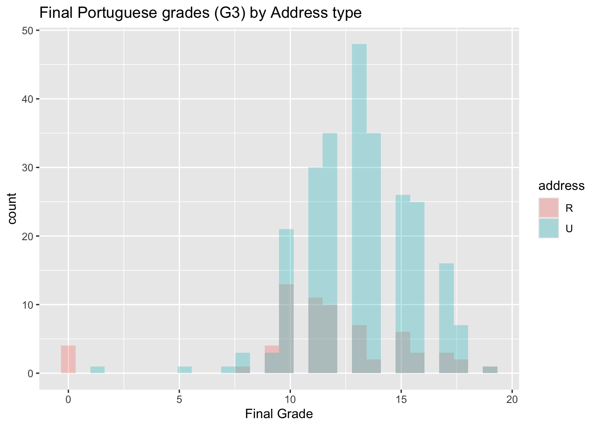
ggplot(dat, aes(x=G3_mat, fill=address)) +geom_histogram(alpha=0.3, position ='identity') +ggtitle("Final Math grades (G3) by Address type") +xlab("Final Grade")
`stat_bin()` using `bins = 30`. Pick better value with `binwidth`.
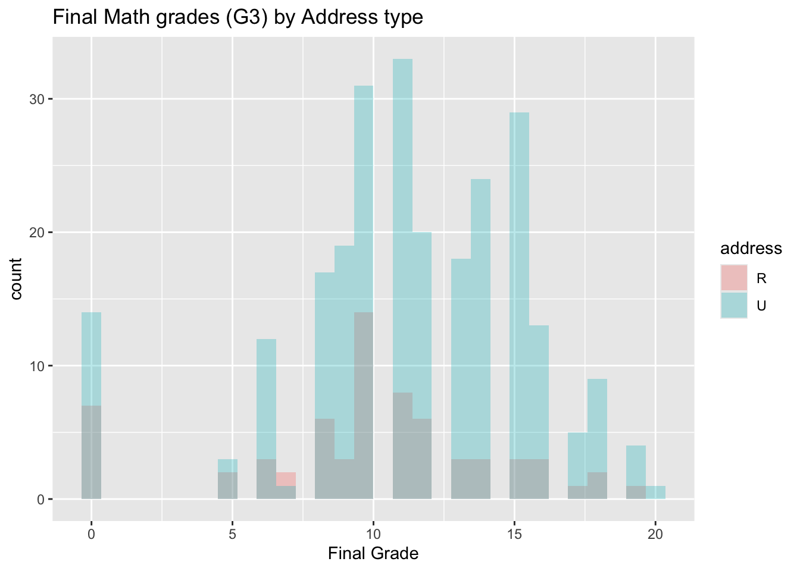
# boxplots for G3_mat and G3_por across levels of addressggplot(dat, aes(x=G3_por, fill=address)) +geom_boxplot() +ggtitle("Final Portuguese grades (G3) by Address type") +xlab("Final Grade")
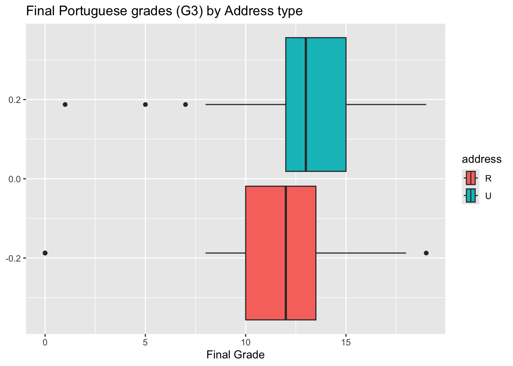
ggplot(dat, aes(x=G3_mat, fill=address)) +geom_boxplot() +ggtitle("Final Math grades (G3) by Address type") +xlab("Final Grade")
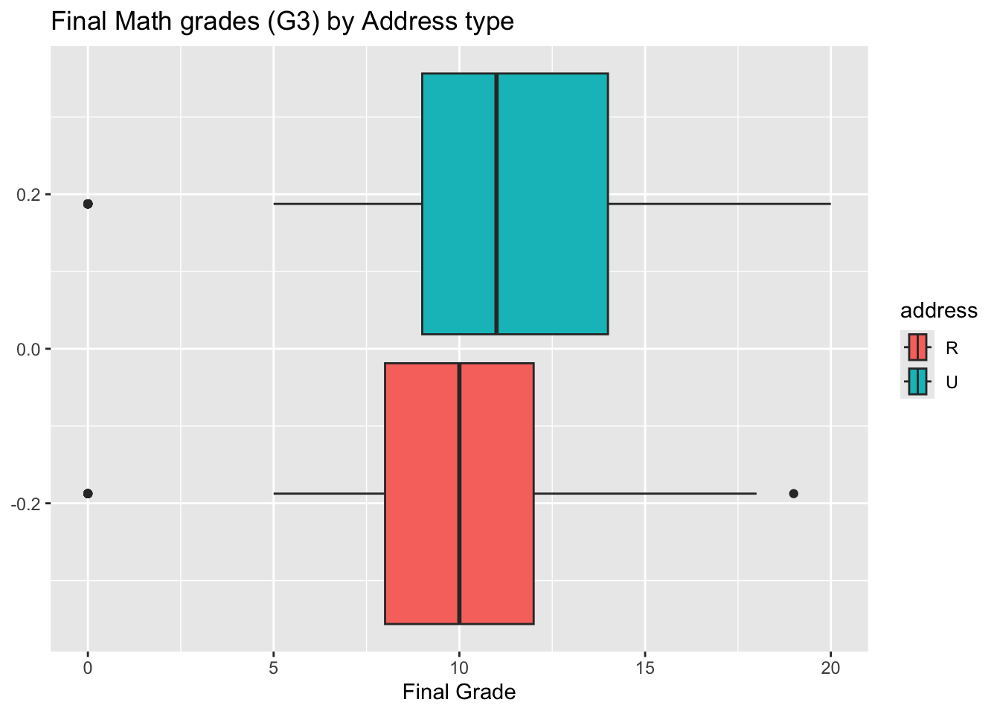
# KDplots for G3_mat and G3_por across levels of addressggplot(dat, aes(x=G3_por, fill=address, cut=address)) +geom_density(alpha=0.3) +ggtitle("Final Portuguese grades (G3) by Address type") +xlab("Final Grade")
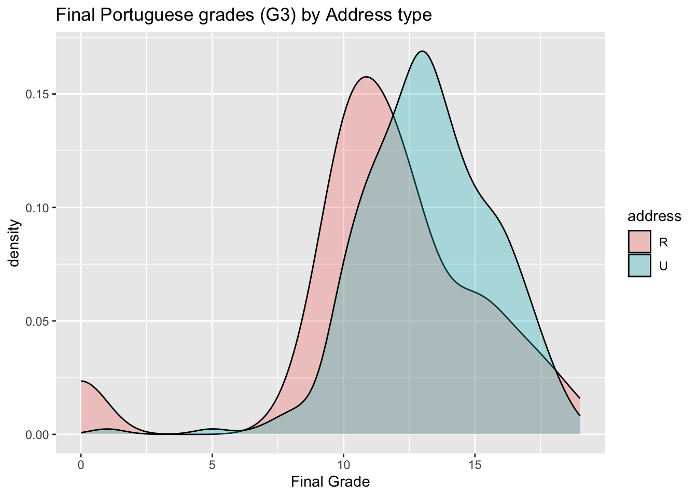
ggplot(dat, aes(x=G3_mat, fill=address)) +geom_density(alpha=0.3) +ggtitle("Final Math grades (G3) by Address type") +xlab("Final Grade")
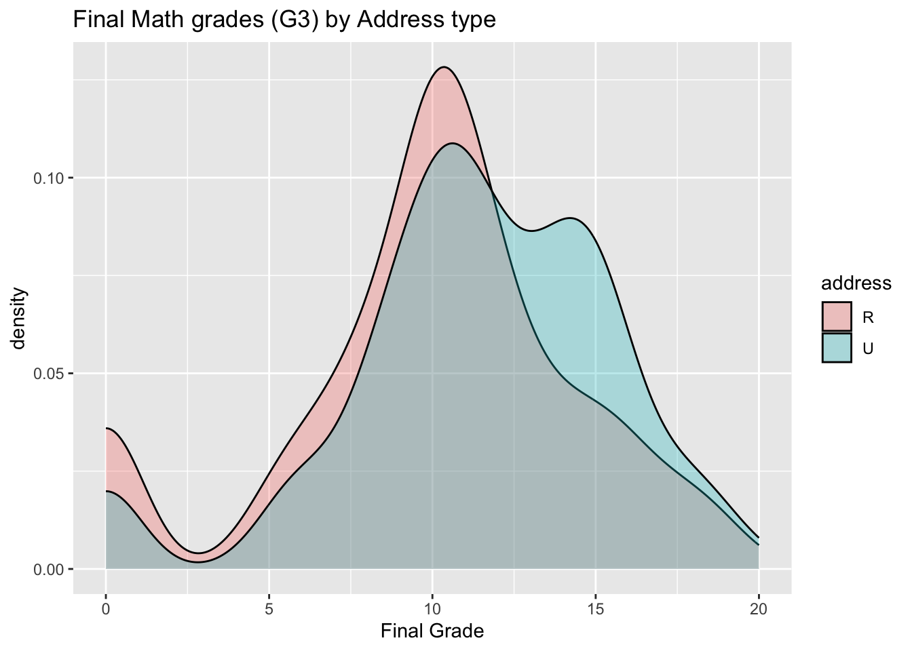
• Create two scatterplots relating a G3 variable to other numeric variables (put G3 on the y-axis). You should jitter the points if they sit on top of each other. Color the points by a categorical variable in each. Add appropriate labels and titles.
ggplot(dat, aes(x=G1_mat, y=G3_mat, color=address)) +geom_jitter(alpha=0.6) +ggtitle("Final Math grades (G3) vs first-term grades (G1) by Address type") +xlab("First term grade") +ylab("Final grade")
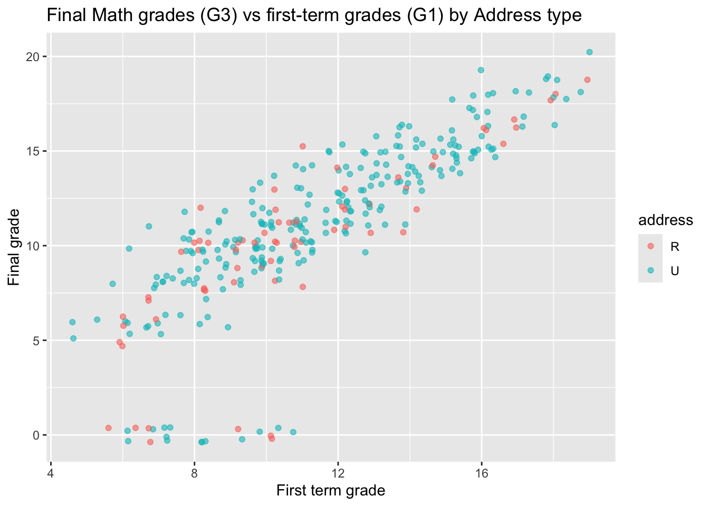
ggplot(dat, aes(x=G3_por, y=G3_mat, color=address)) +geom_jitter(alpha=0.6) +ggtitle("Final Math grades vs final Portuguese grades by Address type") +xlab("Final Math grade") +ylab("Final Portuguese grade")
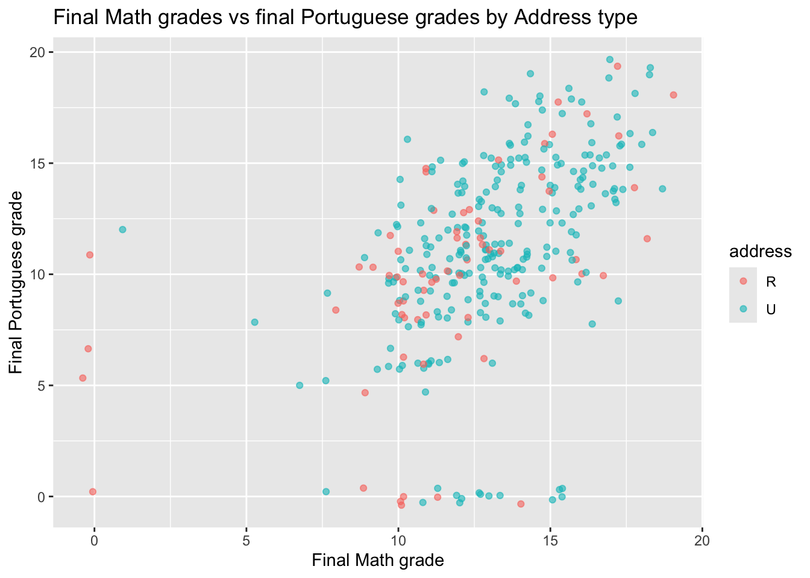
• Repeat the scatter plot step but use faceting to obtain graphs at each setting of another categorical variable.
ggplot(dat, aes(x=G1_mat, y=G3_mat)) +geom_jitter(alpha=0.6) +ggtitle("Final Math grades (G3) vs first-term grades (G1) by Reason type") +xlab("First term grade") +ylab("Final grade") +facet_wrap(~reason)
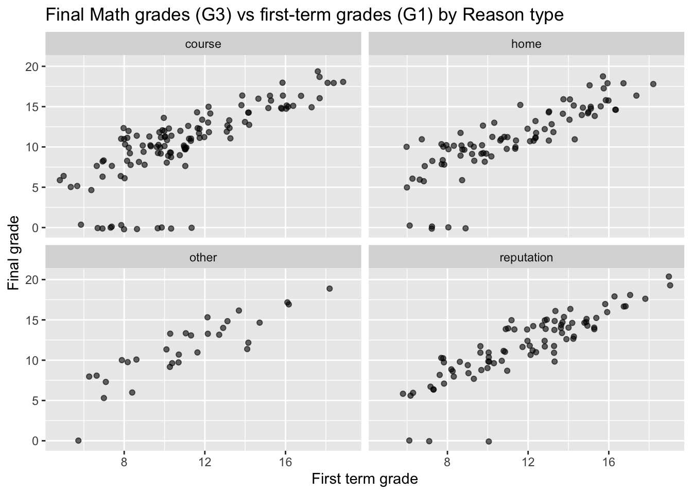
ggplot(dat, aes(x=G3_por, y=G3_mat)) +geom_jitter(alpha=0.6) +ggtitle("Final Math grades vs final Portuguese grades by Reason type") +xlab("Final Math grade") +ylab("Final Portuguese grade") +facet_wrap(~reason)
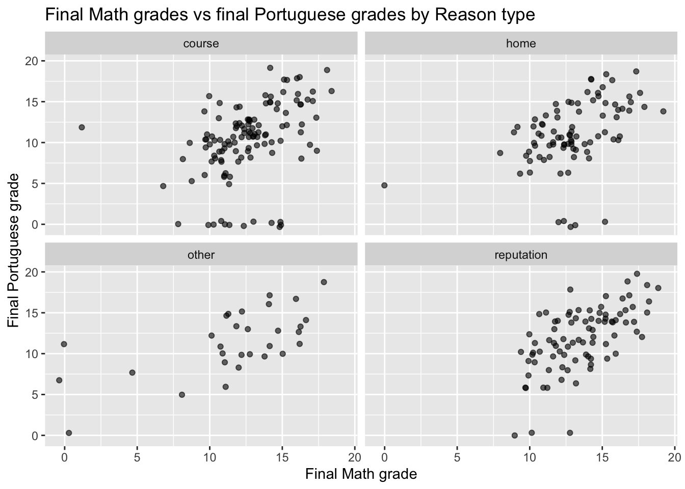
• Repeat the scatter plot step but use faceting to obtain graphs at each combination of two categorical variables.
ggplot(dat, aes(x=G1_mat, y=G3_mat)) +geom_jitter() +ggtitle("Final Math grades (G3) vs first-term grades (G1)\nby Address and Desire for Higher Education") +xlab("First term grade") +ylab("Final grade") +facet_grid(address ~ higher)
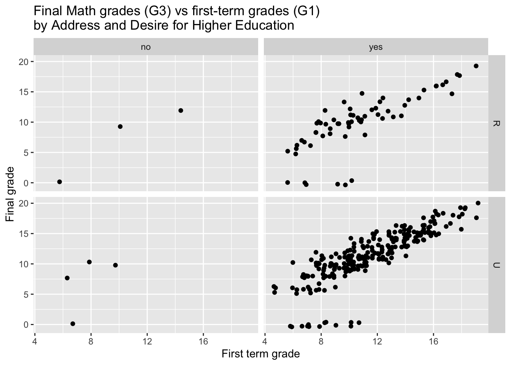
ggplot(dat, aes(x=G3_por, y=G3_mat)) +geom_jitter() +ggtitle("Final Math grades vs final Portuguese grades\nby Address and Desire for Higher Education") +xlab("Final Math grade") +ylab("Final Portuguese grade") +facet_grid(address ~ higher)